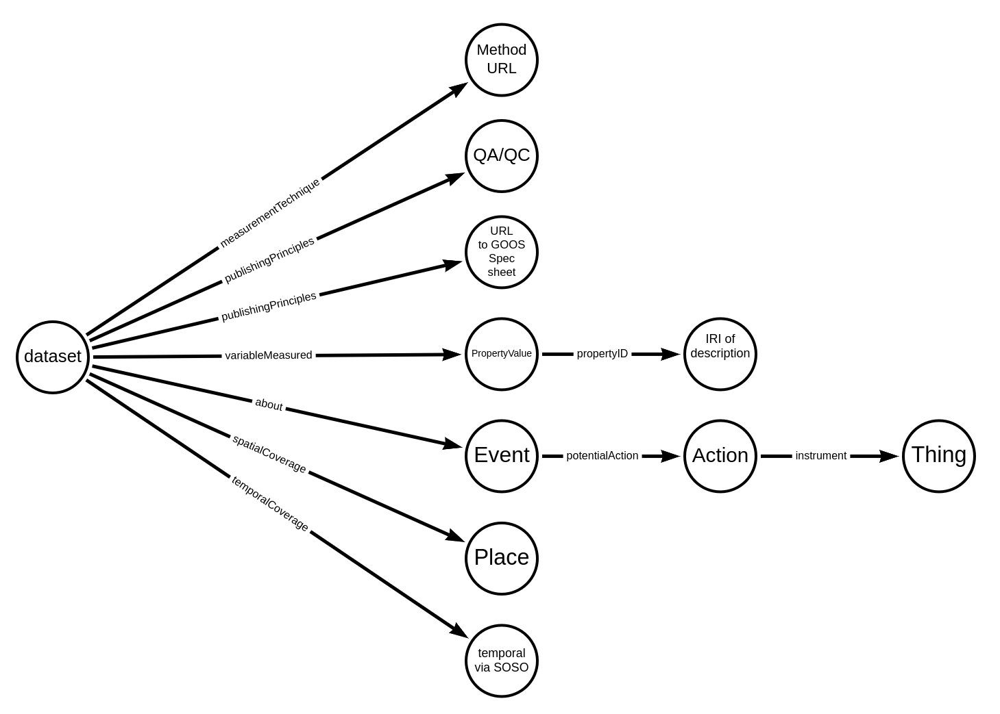

Essential Ocean Variables
Contents
Essential Ocean Variables#
This section details initial documentation of approaches for describing elements of a schema:Dataset with a focus on approaches supporting Essential Ocean Variables.
A rough description of these links leveraging pseudo schema.org terms follows with a detailed and valid data graph as an example after that.
Reference image:

The image above details out some of the key points to be encoded. These include:
Links to and description of methods
QA/QC references
Links to GOOS Specification sheets
Information on variables measured
Connections to the event measured and potential associated instruments
Spatial coverage
Temporal coverage
The valid data graph follows the reference section and details follow that. The highlighted lines in the data graph represented the detailed sections.
References:#
1{
2 "@context": {
3 "@vocab": "https://schema.org/"
4 },
5 "@type": "Dataset",
6 "@id": "https://example.org/dataset/12345",
7 "name": "Example Vessel Surveys Jan-Apr 2007",
8 "description": "Original provider: HDR Environmental, Operations and Construction, Inc. Dataset credits: The U.S. Navy Marine Species Monitoring Program Abstract:Features in this feature class represent sightings from the NAVFAC MISTCS Vessel Surveys Jan-Apr 2007.",
9 "url": "https://obis.org/dataset/dcbb8f12-c869-4d31-aa8b-23abb27898ce",
10 "license": "This work is licensed under a Creative Commons Attribution (CC-BY) 4.0 License",
11 "citation": "Ampela, K. and G. Miller-Francisco. 2017. MIRC NAVFAC MISTCS Vessel Surveys Jan-Apr 2007. Data downloaded from OBIS-SEAMAP (http://seamap.env.duke.edu/dataset/1519) on yyyy-mm-dd.",
12 "version": "2021-04-24T06:34:56.000Z",
13 "keywords": [
14 "Sea State",
15 "Mariana Islands Range Complex",
16 "Oceanography",
17 "Marine Physics"
18 ],
19 "variableMeasured": [
20 {
21 "@type": "PropertyValue",
22 "name": "Sea State",
23 "description": "Sea State is the characterization of wave and swell, typically in terms of height, wavelength, period, and directional wave energy flux ",
24 "propertyID": [
25 "http://purl.obolibrary.org/obo/ENVO_01001374",
26 "https://gcmd.earthdata.nasa.gov/KeywordViewer/scheme/all/11aca777-8a01-42ce-b076-b3059c3d8cae?gtm_keyword=SEA%20STATE>m_scheme=Earth%20Science"
27 ]
28 },
29 {
30 "@type": "PropertyValue",
31 "name": "Ocean Surface Stress",
32 "description": "The 2-dimensional horizontal vector Ocean Surface Stress is the rate per unit area at which momentum is transferred from the atmosphere to the ocean.",
33 "propertyID": "http://purl.obolibrary.org/obo/ENVO_01001844",
34 "value": 0.2,
35 "unitCode": "http://qudt.org/vocab/unit/N-PER-M2"
36 }
37 ],
38 "measurementTechnique": [
39 "http://dx.doi.org/10.1002/exampleMethodsSeaStateDOI.ch1",
40 "http://dx.doi.org/10.1002/exampleMethodsOceanStressDOI.ch1"
41 ],
42 "publishingPrinciples": [
43 {
44 "@type": "CreativeWork",
45 "url": "http://www.goosocean.org/components/com_oe/oe.php?task=download&id=34494&version=1.0&lang=1&format=1",
46 "name": "Ocean Observations Physics and Climate Panel (OOPC) Sea State GOOS EOV Specification Sheet",
47 "description": "This is the EOV specification sheet released by GOOS for Sea State. It was composed by the Ocean Observations Panel for Climate. OOPC is sponsored by the Global Ocean Observing System the Global Climate Observing System and the World Climate Research Program. OOPC provides advice on scientific requirements to the Joint Commission for Oceanography and Marine Meteorology. "
48 },
49 {
50 "@type": "CreativeWork",
51 "url": "http://www.goosocean.org/components/com_oe/oe.php?task=download&id=34507&version=1.0&lang=1&format=1",
52 "name": "Ocean Observations Physics and Climate Panel (OOPC) Ocean Surface Stress GOOS EOV Specification Sheet",
53 "description": "This is the EOV specification sheet released by GOOS for Ocean Surface Stress. It was composed by the Ocean Observations Panel for Climate. OOPC is sponsored by the Global Ocean Observing System the Global Climate Observing System and the World Climate Research Program. OOPC provides advice on scientific requirements to the Joint Commission for Oceanography and Marine Meteorology. "
54 },
55 {
56 "@type": "CreativeWork",
57 "url": "http://example.org/id/doc/ID",
58 "name": "QA/QC guidance",
59 "description": "QA/QC - EOV data and the methods used to generate them should have been vetted through some QA/QC methods, ideally performed by an independent third-party. These should be included in a dedicated JSON-LD block, even if it points to the same methodology linked to in the measurementTechnique block. "
60 }
61 ],
62 "distribution": {
63 "@type": "DataDownload",
64 "contentUrl": "http://example.org/archive.do?r=zd_1519",
65 "encodingFormat": "application/zip"
66 },
67 "spatialCoverage": {
68 "@type": "Place",
69 "geo": {
70 "@type": "GeoShape",
71 "polygon": "142.014 10.161667,142.014 18.033833,147.997833 18.033833,147.997833 10.161667,142.014 10.161667"
72 },
73 "additionalProperty": {
74 "@type": "PropertyValue",
75 "propertyID": "http://dbpedia.org/resource/Spatial_reference_system",
76 "value": "http://www.w3.org/2003/01/geo/wgs84_pos#lat_long"
77 }
78 },
79 "provider": [
80 {
81 "@id": "https://oceanexpert.org/institution/INSTITUTE_ID",
82 "@type": "Organization",
83 "legalName": "Example University",
84 "name": "Example University",
85 "url": "https://oceanexpert.org/institution/INSTITUTE_ID"
86 }
87 ],
88 "about": {
89 "@type": "Event",
90 "description": "describe the activity, might include name here too.",
91 "name": "Measurement of sea state",
92 "potentialAction": [
93 {
94 "@type": "Action",
95 "name": "Measurement of sea state",
96 "instrument": {
97 "@type": "Thing",
98 "name": "OceanWaveS WaMoS II 500 waves and surface current radar",
99 "url": "http://vocab.nerc.ac.uk/collection/L22/current/TOOL0999/",
100 "description": "The WaMoS II 500 radar is an industry-proven X-band radar-based wave and surface current monitoring system developed by OceanWaveS. This sensor is able to measure and displays essential wave field parameters including wave heights, periods, directions and surface currents. The operating range extends to 4.0 km depending on X-band radar type and installation gemoetry. Requiring a minimum wind speed of 3 m/s and a minimum wave height of about 0.5m."
101 }
102 },
103 {
104 "@type": "Action",
105 "name": "Measurement of ocean stress",
106 "instrument": {
107 "@type": "Thing",
108 "name": "Metek uSonic-3 Scientific {formerly: USA-1} ultrasonic anemometer",
109 "url": "http://vocab.nerc.ac.uk/collection/L22/current/TOOL1402/",
110 "description": "A high precision 3D sonic anemometer. Typical applications for this device include: meteorological systems, meteorological networks, measuring dispersion parameters for pollution modelling, research stations, industrial sites, air quality forecasts, eddy correlation fluxes, marine and offshore platforms, wind shear detection, wind energy, and wake vortex monitoring. This device takes accurate measurement of 3 wind components and turbulence. Constructed with stainless steel. "
111 }
112 }
113 ]
114 },
115 "datePublished": "2018-07-29",
116 "dateModified": "2018-07-30T14:30Z",
117 "temporalCoverage": "2012-09-20/2016-01-22"
118}
license#
As licenses are an important cross-cutting item there is a separate section on licenses at: License chapter
keywords#
As keywords are an important cross-cutting item there is a separate section on keywords at: Keywords chapter
variableMeasured#
A key section detailing approaches to describing variables. This property expects either of text or the more detailed schema:PropertyValue.
Note
There can be multiple links in the proertyID property. Preference should be given to those with semantic descriptions.
Note
In cases where a single value can be associated with a variable, or a min max value, this can be provided along with a unitCode property. In cases where a variable represents a large collection of data this can be omitted and the data obtained in a distribution reference.
See also
See also: Science on Schema variable
import json
from rdflib.extras.external_graph_libs import rdflib_to_networkx_multidigraph
from rdflib.extras.external_graph_libs import rdflib_to_networkx_graph
from pyld import jsonld
import graphviz
import os, sys
currentdir = os.path.dirname(os.path.abspath(''))
parentdir = os.path.dirname(currentdir)
sys.path.insert(0, parentdir)
from lib import jbutils
with open("./graphs/obisData2.json") as dgraph:
doc = json.load(dgraph)
frame = {
"@context": {"@vocab": "https://schema.org/"},
"@explicit": "true",
"@type": "Dataset",
"variableMeasured": ""
}
context = {
"@vocab": "https://schema.org/",
}
compacted = jsonld.compact(doc, context)
framed = jsonld.frame(compacted, frame)
jd = json.dumps(framed, indent=4)
print(jd)
jbutils.show_graph(framed)
Fontconfig error: "/etc/fonts/conf.d/30-0-google-crosextra-caladea-fonts.conf", line 1: Extra content at the end of the document
Fontconfig error: "/etc/fonts/conf.d/60-open-sans.conf", line 1: Extra content at the end of the document
Fontconfig error: "/etc/fonts/conf.d/62-google-crosextra-caladea-fonts.conf", line 1: Extra content at the end of the document
{
"@context": {
"@vocab": "https://schema.org/"
},
"@id": "https://example.org/dataset/12345",
"@type": "Dataset",
"variableMeasured": [
{
"@type": "PropertyValue",
"description": "Sea State is the characterization of wave and swell, typically in terms of height, wavelength, period, and directional wave energy flux ",
"name": "Sea State",
"propertyID": [
"http://purl.obolibrary.org/obo/ENVO_01001374",
"https://gcmd.earthdata.nasa.gov/KeywordViewer/scheme/all/11aca777-8a01-42ce-b076-b3059c3d8cae?gtm_keyword=SEA%20STATE>m_scheme=Earth%20Science"
]
},
{
"@type": "PropertyValue",
"description": "The 2-dimensional horizontal vector Ocean Surface Stress is the rate per unit area at which momentum is transferred from the atmosphere to the ocean.",
"name": "Ocean Surface Stress",
"propertyID": "http://purl.obolibrary.org/obo/ENVO_01001844",
"unitCode": "http://qudt.org/vocab/unit/N-PER-M2",
"value": 0.2
}
]
}

measurementTechnique#
https://schema.org/measurementTechnique is used to provide either text about or a URL to information about the techniques or technology used in a Dataset.
import json
from rdflib.extras.external_graph_libs import rdflib_to_networkx_multidigraph
from rdflib.extras.external_graph_libs import rdflib_to_networkx_graph
from pyld import jsonld
import graphviz
import os, sys
currentdir = os.path.dirname(os.path.abspath(''))
parentdir = os.path.dirname(currentdir)
sys.path.insert(0, parentdir)
from lib import jbutils
with open("./graphs/obisData2.json") as dgraph:
doc = json.load(dgraph)
frame = {
"@context": {"@vocab": "https://schema.org/"},
"@explicit": "true",
"@type": "Dataset",
"measurementTechnique": ""
}
context = {
"@vocab": "https://schema.org/",
}
compacted = jsonld.compact(doc, context)
framed = jsonld.frame(compacted, frame)
jd = json.dumps(framed, indent=4)
print(jd)
jbutils.show_graph(framed)
Fontconfig error: "/etc/fonts/conf.d/30-0-google-crosextra-caladea-fonts.conf", line 1: Extra content at the end of the document
Fontconfig error: "/etc/fonts/conf.d/60-open-sans.conf", line 1: Extra content at the end of the document
Fontconfig error: "/etc/fonts/conf.d/62-google-crosextra-caladea-fonts.conf", line 1: Extra content at the end of the document
{
"@context": {
"@vocab": "https://schema.org/"
},
"@id": "https://example.org/dataset/12345",
"@type": "Dataset",
"measurementTechnique": [
"http://dx.doi.org/10.1002/exampleMethodsSeaStateDOI.ch1",
"http://dx.doi.org/10.1002/exampleMethodsOceanStressDOI.ch1"
]
}
publishingPrinciples#
As defined in the Linking to Principles section on publishing principles, This can be used to connect CreativeWork, Organization, or Person to either of CreativeWork or URL. So this allows us to link a CreativeWork to a policy or principle statement. This has some very useful use cases where resources can be grouped based on their connection to those principles and policies.
For this section on EOVs, it is used to link in the specification sheets for the measured variables. This can also be used to link in QA/QC documentation. There is no direct connection between the creative works linked here and the measured variables though convention would be to keep the order the same if possible. Such order is not maintained through potential serialization of the JSON-LD records though list order can be maintained with an @list keyword.
import json
from rdflib.extras.external_graph_libs import rdflib_to_networkx_multidigraph
from rdflib.extras.external_graph_libs import rdflib_to_networkx_graph
from pyld import jsonld
import graphviz
import os, sys
currentdir = os.path.dirname(os.path.abspath(''))
parentdir = os.path.dirname(currentdir)
sys.path.insert(0, parentdir)
from lib import jbutils
with open("./graphs/obisData2.json") as dgraph:
doc = json.load(dgraph)
frame = {
"@context": {"@vocab": "https://schema.org/"},
"@explicit": "true",
"@type": "Dataset",
"publishingPrinciples": ""
}
context = {
"@vocab": "https://schema.org/",
}
compacted = jsonld.compact(doc, context)
framed = jsonld.frame(compacted, frame)
jd = json.dumps(framed, indent=4)
print(jd)
jbutils.show_graph(framed)
Fontconfig error: "/etc/fonts/conf.d/30-0-google-crosextra-caladea-fonts.conf", line 1: Extra content at the end of the document
Fontconfig error: "/etc/fonts/conf.d/60-open-sans.conf", line 1: Extra content at the end of the document
Fontconfig error: "/etc/fonts/conf.d/62-google-crosextra-caladea-fonts.conf", line 1: Extra content at the end of the document
{
"@context": {
"@vocab": "https://schema.org/"
},
"@id": "https://example.org/dataset/12345",
"@type": "Dataset",
"publishingPrinciples": [
{
"@type": "CreativeWork",
"description": "This is the EOV specification sheet released by GOOS for Sea State. It was composed by the Ocean Observations Panel for Climate. OOPC is sponsored by the Global Ocean Observing System the Global Climate Observing System and the World Climate Research Program. OOPC provides advice on scientific requirements to the Joint Commission for Oceanography and Marine Meteorology. ",
"name": "Ocean Observations Physics and Climate Panel (OOPC) Sea State GOOS EOV Specification Sheet",
"url": "http://www.goosocean.org/components/com_oe/oe.php?task=download&id=34494&version=1.0&lang=1&format=1"
},
{
"@type": "CreativeWork",
"description": "This is the EOV specification sheet released by GOOS for Ocean Surface Stress. It was composed by the Ocean Observations Panel for Climate. OOPC is sponsored by the Global Ocean Observing System the Global Climate Observing System and the World Climate Research Program. OOPC provides advice on scientific requirements to the Joint Commission for Oceanography and Marine Meteorology. ",
"name": "Ocean Observations Physics and Climate Panel (OOPC) Ocean Surface Stress GOOS EOV Specification Sheet",
"url": "http://www.goosocean.org/components/com_oe/oe.php?task=download&id=34507&version=1.0&lang=1&format=1"
},
{
"@type": "CreativeWork",
"description": "QA/QC - EOV data and the methods used to generate them should have been vetted through some QA/QC methods, ideally performed by an independent third-party. These should be included in a dedicated JSON-LD block, even if it points to the same methodology linked to in the measurementTechnique block. ",
"name": "QA/QC guidance",
"url": "http://example.org/id/doc/ID"
}
]
}
spatialCoverage#
More details on spatial elements are found at: Spatial Geometry
import json
from rdflib.extras.external_graph_libs import rdflib_to_networkx_multidigraph
from rdflib.extras.external_graph_libs import rdflib_to_networkx_graph
from pyld import jsonld
import graphviz
import os, sys
currentdir = os.path.dirname(os.path.abspath(''))
parentdir = os.path.dirname(currentdir)
sys.path.insert(0, parentdir)
from lib import jbutils
with open("./graphs/obisData2.json") as dgraph:
doc = json.load(dgraph)
frame = {
"@context": {"@vocab": "https://schema.org/"},
"@explicit": "true",
"@type": "Dataset",
"spatialCoverage": ""
}
context = {
"@vocab": "https://schema.org/",
}
compacted = jsonld.compact(doc, context)
framed = jsonld.frame(compacted, frame)
jd = json.dumps(framed, indent=4)
print(jd)
jbutils.show_graph(framed)
Fontconfig error: "/etc/fonts/conf.d/30-0-google-crosextra-caladea-fonts.conf", line 1: Extra content at the end of the document
Fontconfig error: "/etc/fonts/conf.d/60-open-sans.conf", line 1: Extra content at the end of the document
Fontconfig error: "/etc/fonts/conf.d/62-google-crosextra-caladea-fonts.conf", line 1: Extra content at the end of the document
{
"@context": {
"@vocab": "https://schema.org/"
},
"@id": "https://example.org/dataset/12345",
"@type": "Dataset",
"spatialCoverage": {
"@type": "Place",
"additionalProperty": {
"@type": "PropertyValue",
"propertyID": "http://dbpedia.org/resource/Spatial_reference_system",
"value": "http://www.w3.org/2003/01/geo/wgs84_pos#lat_long"
},
"geo": {
"@type": "GeoShape",
"polygon": "142.014 10.161667,142.014 18.033833,147.997833 18.033833,147.997833 10.161667,142.014 10.161667"
}
}
}
about#
This section is an attempt to leverage schema.org to link instrument information. This is done via the Event type with a connected Action type.
See also
See also Identifier and Prov subjectOf and inverse about. schema:about connects the subject matter of the content.
import json
from rdflib.extras.external_graph_libs import rdflib_to_networkx_multidigraph
from rdflib.extras.external_graph_libs import rdflib_to_networkx_graph
from pyld import jsonld
import graphviz
import os, sys
currentdir = os.path.dirname(os.path.abspath(''))
parentdir = os.path.dirname(currentdir)
sys.path.insert(0, parentdir)
from lib import jbutils
with open("./graphs/obisData2.json") as dgraph:
doc = json.load(dgraph)
frame = {
"@context": {"@vocab": "https://schema.org/"},
"@explicit": "true",
"@type": "Dataset",
"about": ""
}
context = {
"@vocab": "https://schema.org/",
}
compacted = jsonld.compact(doc, context)
framed = jsonld.frame(compacted, frame)
jd = json.dumps(framed, indent=4)
print(jd)
jbutils.show_graph(framed)
Fontconfig error: "/etc/fonts/conf.d/30-0-google-crosextra-caladea-fonts.conf", line 1: Extra content at the end of the document
Fontconfig error: "/etc/fonts/conf.d/60-open-sans.conf", line 1: Extra content at the end of the document
Fontconfig error: "/etc/fonts/conf.d/62-google-crosextra-caladea-fonts.conf", line 1: Extra content at the end of the document
{
"@context": {
"@vocab": "https://schema.org/"
},
"@id": "https://example.org/dataset/12345",
"@type": "Dataset",
"about": {
"@type": "Event",
"description": "describe the activity, might include name here too.",
"name": "Measurement of sea state",
"potentialAction": [
{
"@type": "Action",
"instrument": {
"@type": "Thing",
"description": "The WaMoS II 500 radar is an industry-proven X-band radar-based wave and surface current monitoring system developed by OceanWaveS. This sensor is able to measure and displays essential wave field parameters including wave heights, periods, directions and surface currents. The operating range extends to 4.0 km depending on X-band radar type and installation gemoetry. Requiring a minimum wind speed of 3 m/s and a minimum wave height of about 0.5m.",
"name": "OceanWaveS WaMoS II 500 waves and surface current radar",
"url": "http://vocab.nerc.ac.uk/collection/L22/current/TOOL0999/"
},
"name": "Measurement of sea state"
},
{
"@type": "Action",
"instrument": {
"@type": "Thing",
"description": "A high precision 3D sonic anemometer. Typical applications for this device include: meteorological systems, meteorological networks, measuring dispersion parameters for pollution modelling, research stations, industrial sites, air quality forecasts, eddy correlation fluxes, marine and offshore platforms, wind shear detection, wind energy, and wake vortex monitoring. This device takes accurate measurement of 3 wind components and turbulence. Constructed with stainless steel. ",
"name": "Metek uSonic-3 Scientific {formerly: USA-1} ultrasonic anemometer",
"url": "http://vocab.nerc.ac.uk/collection/L22/current/TOOL1402/"
},
"name": "Measurement of ocean stress"
}
]
}
}
temporalCoverage#
Representation of temporal coverage follows ISO 8601 patterns. ESIP Science on Schema as has patterns for Deep Time (geologic time) patterns.
See also
This section is based on the Science on Schema Temporal Coverage
import json
from rdflib.extras.external_graph_libs import rdflib_to_networkx_multidigraph
from rdflib.extras.external_graph_libs import rdflib_to_networkx_graph
from pyld import jsonld
import graphviz
import os, sys
currentdir = os.path.dirname(os.path.abspath(''))
parentdir = os.path.dirname(currentdir)
sys.path.insert(0, parentdir)
from lib import jbutils
with open("./graphs/obisData2.json") as dgraph:
doc = json.load(dgraph)
frame = {
"@context": {"@vocab": "https://schema.org/"},
"@explicit": "true",
"@type": "Dataset",
"temporalCoverage": ""
}
context = {
"@vocab": "https://schema.org/",
}
compacted = jsonld.compact(doc, context)
framed = jsonld.frame(compacted, frame)
jd = json.dumps(framed, indent=4)
print(jd)
jbutils.show_graph(framed)
Fontconfig error: "/etc/fonts/conf.d/30-0-google-crosextra-caladea-fonts.conf", line 1: Extra content at the end of the document
Fontconfig error: "/etc/fonts/conf.d/60-open-sans.conf", line 1: Extra content at the end of the document
Fontconfig error: "/etc/fonts/conf.d/62-google-crosextra-caladea-fonts.conf", line 1: Extra content at the end of the document
{
"@context": {
"@vocab": "https://schema.org/"
},
"@id": "https://example.org/dataset/12345",
"@type": "Dataset",
"temporalCoverage": "2012-09-20/2016-01-22"
}
Science on Schema temporalCoverage#
Example from Science on Schema recommendations:
1{ "@context": {
2 "@vocab": "https://schema.org/",
3 "time": "http://www.w3.org/2006/time#"
4},
5
6"@type": "Dataset",
7 "description": "Eruptive activity at Mt. St. Helens, Washington, March 1980 - January 1981",
8 "temporalCoverage": ["1980-03-27T19:36:00/1981-01-03T00:00:00Z",
9 {
10 "@type": "time:ProperInterval",
11 "time:hasBeginning": {
12 "@type": "time:Instant",
13 "time:inXSDDateTimeStamp": "1980-03-27T19:36:00Z"
14 },
15 "time:hasEnd": {
16 "@type": "time:Instant",
17 "time:inXSDDateTimeStamp": "1981-01-03T00:00:00Z"
18 }
19 }]
20}